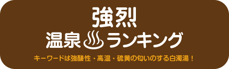
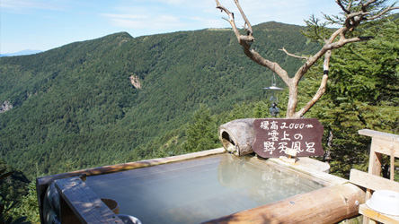
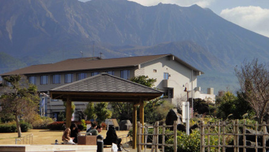
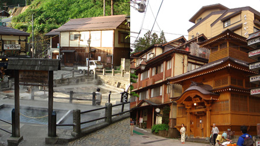

注※ランキングは火山学者Yの個人的なセレクトによるものです

-
 No.1 霧島・新湯（鹿児島県）
No.1 霧島・新湯（鹿児島県）
- 単純硫黄泉（硫化水素型）（pH3.2）
- 秘湯西の大関、硫黄を満喫。強烈な硫化水素臭、青白色の湯
-

秘湯番付の西の大関、「新湯」は標高900mの一軒宿で、古くから皮膚病に効く湯治場としても有名です。民営国民宿舎「新燃荘」の建物を外から見ると、なんとカーテンも硫黄色で、気分が盛り上がります。入浴用の湯は火山性の水蒸気ガス造成泉とのことですが、建物わきの渓流では温泉の自然湧出が見られます。新湯の湯は強烈な硫化水素型の単純硫黄泉で、入浴後もしばらく硫黄の匂いを満喫できます。晴れた日には広々とした混浴の露天風呂で、きれいな青白色の湯を堪能できます。
この新湯は火山地形の宝庫のような霧島の大浪池の火山体の斜面にあります。わずか2.5km先には新燃岳があり、付近の硫気地帯からよく見えます。ジェームスボンドの映画「007」にも登場した新燃岳の火口は、2011年に噴出した溶岩が埋めています。日本では西ノ島に次いで新しい、この溶岩に思いを馳せながら湯につかるのもおすすめです。
-
 No.2 那須湯本・鹿の湯（栃木県）
No.2 那須湯本・鹿の湯（栃木県）
- 含硫黄-カルシウム-硫酸塩・塩化物泉（pH2.2）
- 驚愕のかぶり湯と温度別の湯も楽しめる硫黄の谷。硫黄の匂いが漂う民宿街の谷
-

那須湯本温泉の共同湯「鹿の湯」は、殺生石で有名な賽の河原の硫気地帯から始まる谷間にあります。かぶり湯や打たせ湯の浴槽や、 41、42、43、44、46、48度の浴槽があり、高温の湯に挑戦することもできます。鹿の湯通り（民宿街）のぶらり散策もおすすめです。硫黄の匂いが立ち込めた谷には民宿や共同湯があり、茶臼岳登山の拠点にもできます。
民宿では温泉玉子が出されることもあり、気分が盛り上がります。入浴後数日間は体についた硫黄の匂いとポカポカ感が続くここの湯は、かつて殺生石で句を残した松尾芭蕉も楽しんだのではないでしょうか。
-
 No.3 万座（群馬県）
No.3 万座（群馬県）
- 酸性-含硫黄-ナトリウム-硫酸塩・塩化物泉（pH2.5）
- 迫力の噴気地帯、高原の青空と乳白色の湯のコントラスト
-

上信越国立公園内にある万座温泉（標高1800m）は高原の温泉地です。周囲の白っぽい山肌は、火山ガスがにじみ出ている証拠です。活発な時には水蒸気や火山ガスを勢いよく噴出する噴気孔“空吹き”を見られ、火山地帯であることを実感できます。
万座の湯は地表から湧き出す自然湧出で、湧出量が豊富です。湯気を立てる青白色の源泉「湯畑」付近は湯治場の風情もあります。日進館、万座亭、万座高原ホテルなど、それぞれ趣のある露天風呂で、高原の景色や空気も楽しめます。硫黄濃度の高い乳白色の濁り湯は最高の贅沢で、転地療養効果も抜群な温泉地といえます。
- ナトリウム-塩化物泉 （pH2.1）
- 80度の湯がわく海岸！砂蒸しは10分以内で。
-
砂蒸しは蒸かし湯の一種で、日本独特のユニークな入浴法といえます。指宿の海岸の摺ヶ浜では80度もの湯が自然に湧いており、背後の鰻池周辺から高温の温泉が地下水となって運ばれていると考えられています。
江戸時代から行われているという砂蒸しは体験する価値があります。小屋の中で、浅く掘られた砂の上に浴衣のまま寝そべり、係の人に温められた砂をかけてもらいます。この時の砂の重みはなかなか新鮮です。温熱効果が高いので10分以内の“入浴”になりますが、じわじわと体の芯から温まります。ここはまさに阿多カルデラの地熱、火山の恵みを体感できる場所です。砂蒸しの後は、食塩泉の温泉も楽しめます。
- 酸性・含硫黄-アルミニウム-硫酸塩・塩化物泉（pH01.5）
- 温泉番付で最高位の東の大関。自然湧出量は日本一！
-
映画テルマエ・ロマエにも登場した草津温泉の中心地「湯畑」では、まず共同湯「白旗の湯」の入り口にある白旗源泉で、温泉の湧出を確かめることができます。湯畑末端の湯滝には強酸性・高温の温泉中でも生きる単細胞藻類などが分布していて青緑色になっています。
湯をかきまぜる「湯もみ」は濃度を変えずに温度を下げる日本独特の方法で、現在も湯もみショーで見たり体験することができます。湯畑以外にも、近くの西の河原公園をのんびりと散策すれば、開放感たっぷりの広大な「西の河原露天風呂」に到着します。高温で強酸性(pH1.5)の草津の湯は、一年中、体をしっかりと温めてくれます。温泉熱を利用した草津熱帯園や草津町温泉資料館など、見どころがありすぎる温泉地です
- 箱根・仙石原温泉（神奈川県／pH0.0）
- 黒玉子でも有名な大涌谷で作られる温泉
-
箱根火山の中央火口丘では、大涌谷, 早雲山, 湯ノ花沢の3地域に活発な硫気地帯があり、最も規模が大きいのが大涌谷です。
大涌谷は3000年ほど前の神山での水蒸気爆発の火口跡です。荒々しい光景が広がり、多くの観光客をひきつけてきました。
大涌谷では、古くから火山性蒸気を利用した温泉の造成がされていて、多くの温泉施設に供給されています。箱根の温泉の泉質は場所により様々ですが、仙石原では硫黄の匂いのする白濁の湯を堪能できます。
大涌谷は「黒タマゴ」の製造でも知られます。写真は玉子茶屋前の沸騰状態の熱水溜まりです。この自然湧出泉源に卵を一時間ほど浸すと、硫化水素と鉄分が反応して硫化鉄(FeS)となって、卵の殻に結びついて黒くなります。殻をむきやすくするために、さらに火山ガスにさらして、出来上がりです。（写真：2015年4月撮影）
- 含硫黄‐ナトリウム・マグネシウム・カルシウム‐炭酸水素塩泉（pH0.0）
- 標高2000mの絶景の野天風呂のある秘湯
-

登山の拠点、星空や野鳥観察の宿としても知られる高峰温泉は、烏帽子・浅間火山群の真っただ中にあります。日帰り利用もできるランプの湯では、やや温度の低めの源泉も楽しめます。かすかに硫黄の匂いのする湯はよく温まります。
特筆すべきは、宿泊者限定の野天風呂で、目の前に絶景が広がります。画面右手奥には池の平湿原のある火山体が見えますが、現在の浅間山の火口のような噴火口跡が湿原となっているのです。10万年以上も前の火山活動を想像しながら野天湯に浸かるというのも面白いかもしれません。
- ナトリウム-カルシウム-硫酸塩・塩化物泉（pH0.0）
- 外国人観光客が集結する スノーモンキーの温泉
-
徒歩でたどりつく秘境の地獄谷温泉は、野生のニホンザルの入浴がみられることであまりにも有名です。一軒宿「後楽館」のそばの横瀬川には「渋の地獄谷噴泉」と呼ばれる、10mもの高さまで温泉が自噴する噴泉塔（天然記念物）があり、目をひきます。周囲の谷の斜面は猿が走り回り、独特な世界です。
「野猿公苑」の猿専用の湯船の周りには雪の多い真冬でも外国人観光客が集結します。ライブカメラの中継では、雪のなか何時間も撮影に熱中する人が見られます。サルの入浴は真冬だけではなく、子ザルがプール代わりにはしゃぐ姿も見られます。伊豆熱川バナナワニ園では全国でも珍しいワニの温泉飼育がされていますが、温泉好きは人間だけではないことを実感させられます。
- ナトリウム-塩化物泉（pH0.0）
- ネーミングがすごい黄褐色の濁り湯。
60万都市からの距離３㎞の活火山、桜島の温泉 -

桜島での火山地質の調査の帰りに、地元の人々に混じって楽しむのが、ネーミングも強烈な「マグマ温泉」です。桜島では時々同業の火山研究者の方に遭遇することもありますが、かつてマグマ温泉の近くにあった国民宿舎「さくらじま荘」のオレンジ色のタオルを懐かしく思う方も多いと思われます。桜島港付近の温泉は、海岸に近く、ナトリウム-塩化物泉ですが、鉄分が多く、黄褐色の濁り湯です。タオルも染めてしまうほどの濁り湯は、信州の松代や、浅間山の南麓の天狗温泉などを彷彿とさせます。
桜島フェリーを眺めながら熱めの温泉を堪能できますが、３kmの距離の先には、鹿児島の60万都市が広がっていて、都市のそばの活火山にいることを実感します。
マグマ温泉は、およそ100年前の大正噴火の時に溶岩が海を埋め立ててできた溶岩原の上にあります。古里の東方ではかつての有村温泉が大正噴火の溶岩に埋没しています。桜島には昭和溶岩を噴出した1946年の頃に一時的に出現した幻の温泉もあるそうです。桜島ミュージアムでは、古里海岸の砂を掘って足湯を作るツアーが好評とのことです。一般のガイド本ではあまり紹介されませんが、桜島の温泉は穴場といえそうです。
- 酸性-含硫黄-アルミニウム-硫酸塩泉ほか（pH0.0）
- 泥水中での噴気！坊主地獄！
-
雲仙普賢岳の噴火は20年以上前のこととなりましたが、島原半島ジオパークや雲仙温泉を訪れると、いたるところで活火山を実感できます。雲仙地獄では活発な噴気活動がみられ、特に泥水中での噴気が造り出す坊主地獄の不思議な造形は必見といえます。噴気孔に針状の硫黄の結晶を見つけることもできます。
「雲仙観光ホテル」は昭和初期に外国人観光客向けに建てられたクラシックホテルです。その浴室にはドーム型の天井やステンドグラスなどがあって、洋風な雰囲気の中、硫黄泉に浸かれる珍しい温泉です。
-
No.1 地獄谷温泉
- 地獄谷（長野県 湯田中／渋温泉郷,pH7）
- 外国人観光客が集結するスノーモンキーの温泉
-
徒歩でたどりつく秘境の地獄谷温泉は、野生のニホンザルの入浴がみられることであまりにも有名です。真冬でも外国人観光客が集結する野猿公苑の猿専用の湯船は、ライブカメラでも見ることができます。
写真は5月撮影のため、スノーモンキーではありませんが、子ザルがプール代わりにはしゃぐ姿が見られました。付近の旅館のそばの横瀬川には「渋の地獄谷噴泉」と呼ばれる、10mもの高さまで温泉が自噴する噴泉塔（天然記念物）があり、目をひきます。
周囲の谷の斜面も猿が走り回り、独特な世界です。温泉で飼育されている伊豆熱川バナナワニ園のワニも温泉に浸かって気持ちよさげなのを思い出します。
-
No.2 鰻温泉
- 鰻温泉（鹿児島県／pH5.0-8.6）
- なんと噴火口の中、さっぱり高温湯。“スメ”とは？
-

阿多カルデラの西部に位置する指宿は、国内有数の火山と地熱、温泉を実感できる土地です。鰻池は直径約1.数kmの絶壁に囲まれた火口地形です。唯一の傾斜地にある温泉集落では、いたるところで白く噴気が上がっています。
写真の共同浴場は、さっぱりした高温湯で、蒸気噴気から温泉を造成しています。 集落の各家庭では、食材を蒸かすのに天然の蒸気が利用されていて、蒸しかまどは“スメ”と呼ばれています。近づいてみると火山ガスからの昇華物（結晶）が見られます。
鰻温泉の南方には地熱発電所があり、指宿の約半分の世帯の電力をまかなっているということです。
-
No.3 有馬温泉
- 有馬温泉（兵庫県／pH4.6-6.2）
- 西の大関、とにかく熱い金の湯！炭酸せんべいも有名な歴史ある温泉地
-

西の大関、有馬温泉は「日本書紀」にも登場する歴史ある温泉地で、温泉地の風景や、炭酸せんべいなど観光資源も豊かです。
写真は金の湯付近の源泉の一つです。金の湯は鉄分や塩分に富んでいて、とにかく熱いのが特徴です。写真には炭酸泉の湧出風景がみられます。 炭酸泉から発生する二酸化炭素で虫や鳥が死んだとされる地獄も残っています。
-
No.4 指宿温泉
- ナトリウム-塩化物泉 （pH6.0-7.0）
- 80度の湯がわく海岸！砂蒸しは10分以内で。
-
砂蒸しは蒸かし湯の一種で、日本独特のユニークな入浴法といえます。指宿の海岸の摺ヶ浜では80度もの湯が自然に湧いており、背後の鰻池周辺から高温の温泉が地下水となって運ばれていると考えられています。指宿の海岸では、江戸時代から砂蒸しが行われているという記録が残っています。
写真の小屋の中では、浅く掘られた砂の上に浴衣のまま寝そべり、係の人に温められた砂をかけてもらいます。この時の砂の重み（平均密度2.5ぐらい？）はなかなか新鮮です。温熱効果が高いので10分以内の“入浴”になりますが、じわじわと体の芯から温まります。ここはまさに阿多カルデラの地熱、火山の恵みを体感できる場所です。砂蒸しの後は、食塩泉の温泉（海水由来）も楽しめます。大分県の別府温泉にも砂蒸しができるところがいくつかあります（写真右）。
-
No.5 野沢温泉
- 含硫黄-ナトリウム・カルシウム-硫酸塩泉ほか（pH7.9-9.1）
- ゆで釜のある湯の街の風景
-

野沢温泉は、志賀高原の火山の一つである毛無山のふもとにあり、火山の恵みを実感できる地です。上杉・武田の湯治場でもあった野沢温泉の共同湯「大湯」は江戸時代の趣のある湯屋建築です。曲がりくねった細い坂道が多い温泉街では外湯めぐりや散策が楽しめ、朝市も人気です。
野沢温泉のシンボルでもある「麻釜」泉源地は、90℃近い熱泉の湯池です。住民の台所として、日常的に野沢菜などの野菜や卵を茹でる光景が見られます。
-
No.6 松代温泉
- 含鉄‐ナトリウム・カルシウム‐塩化物温泉（／pH6.4）
- 赤褐色の濁り湯は鉄分が濃厚。ケンザンの上を歩くような析出物
-

-
No.7 蔵王温泉
- 含硫黄-アルミニウム-硫酸塩泉 （pH1.3-1.5）
- 美しい火口湖「御釜」や樹氷でも有名な蔵王。
強酸性の蔵王の湯は目にはいると沁みて大変！ -

-
No.8 星野温泉・とんぼの湯（長野県）
- ナトリウム‐炭酸水素塩・塩化物温泉（pH6.6）
- 明治時代の草津帰りの人々の「草津の上り湯」はポカポカ、 あたたまる度No.1
-

-
No.9 熱川（静岡県）
- 塩化物泉（pH8.1-8.7）
- 全国でも珍しいワニの温泉飼育
-

-
No.10 川原湯温泉
- 含ナトリウム塩化物-カルシウム硫酸塩泉（硫化水素型） （pH7.2）
- ダムに沈みゆく記憶の温泉地
-
これから文章がはいります。これから文章がはいります。これから文章がはいります。これから文章がはいります。これから文章がはいります。これから文章がはいります。これから文章がはいります。これから文章がはいります。これから文章がはいります。これから文章がはいります。
- 単純硫黄泉（pH8.1）
- トロッコ電車と徒歩でたどりつくワイルドな湯
-
祖母谷温泉（ばばだに）は、宇奈月からトロッコ列車にゆられ、さらに徒歩でたどり着く黒部峡谷の温泉です。V字型の谷底の河原から湯気が立ち上る光景は、なかなかワイルドです。「河原での入浴は危険なため、近くの施設を利用してください」との注意の看板があります。
- 単純硫黄泉（pH7.8）
- ○○温泉○○温泉○○温泉○○温泉○○温泉○○温泉○○温泉○○温泉○○温泉○○温泉○○温泉○○温泉○○温泉○○温泉○○温泉○○温泉○○温泉○○温泉○○温泉○○温泉○○温泉○○温泉○○温泉○○温泉○○温泉○○温泉○○温泉○○温泉○○温泉○○温泉
- 含硫黄-ナトリウム・カルシウム-塩化物・硫酸塩泉（硫化水素型） （pH0.0）
- 源泉の真上の露天風呂、足下湧出湯
- ナトリウム‐炭酸水素塩・塩化物温泉（pH6.6）
- 明治時代の草津帰りの人々の「草津の上り湯」はポカポカ、 あたたまる度No.1
-
- ○○（△△△県／○○,pH0.0）
- ○○温泉○○温泉○○温泉○○温泉○○温泉○○温泉○○温泉○○温泉○○温泉○○温泉○○温泉○○温泉○○温泉○○温泉○○温泉○○温泉○○温泉○○温泉○○温泉○○温泉○○温泉○○温泉○○温泉○○温泉○○温泉○○温泉○○温泉○○温泉○○温泉○○温泉
主な参考文献
- 日本温泉科学会 西村進編(2004)温泉科学の最前線- .ナカニシヤ出版,236p.
- 日本温泉科学会編(2005)温泉学入門-温泉への誘い- .コロナ社,128p.
- 日本温泉地域学会編(2008)日本温泉地域資産,80p.
- 佐々木信行(2013)温泉の科学,SBクリエイティブ,238p.
- 白水晴雄(1994)温泉のはなし, 技報堂出版, 201p.